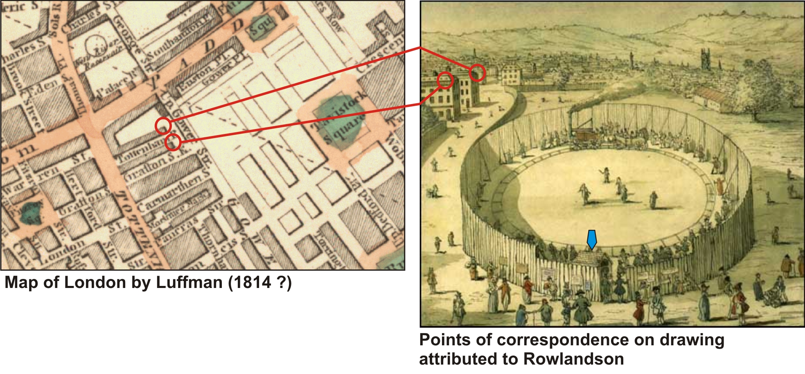

A Brief History and Digital Reconstruction

Location of Steam Circus proposed by Tyler (2006; Figure 10). According to Tyler (2006), the position of the blue arrow on the right image corresponds to the location of the bubble shown below on a current map of the area.
View Larger Map
Proposed location of Steam Circus on map recorded in 2008. Please use the zoom-in and zoom-out control to focus on the symbols. Please do a left-click-hold-drag mouse operation to pan across the map. Click on the bubbles for more information.